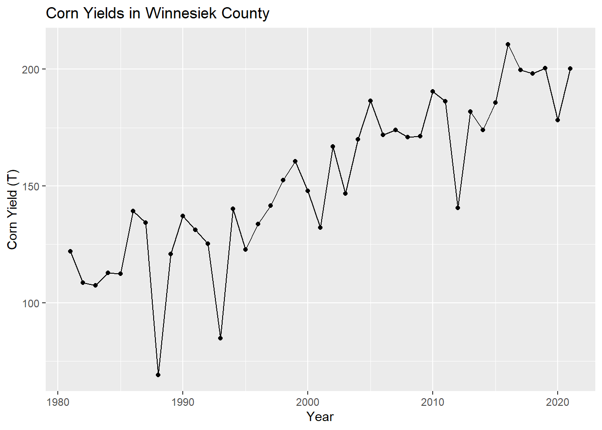
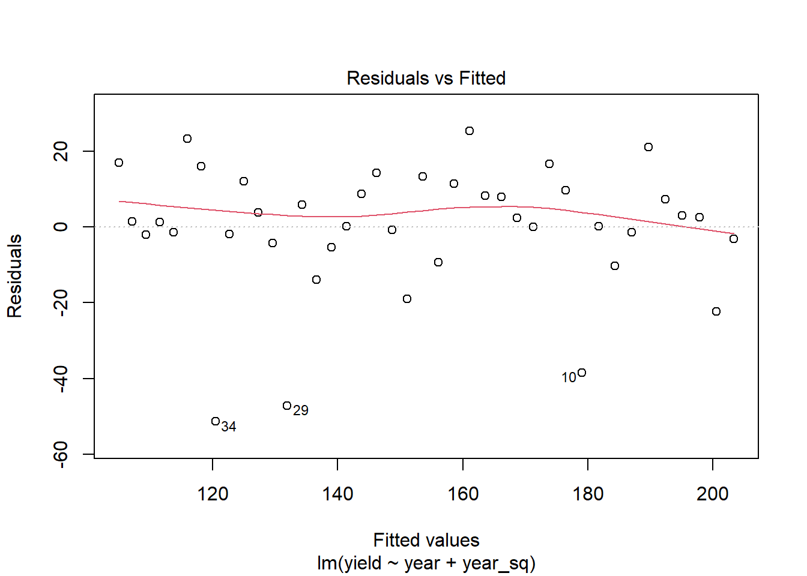
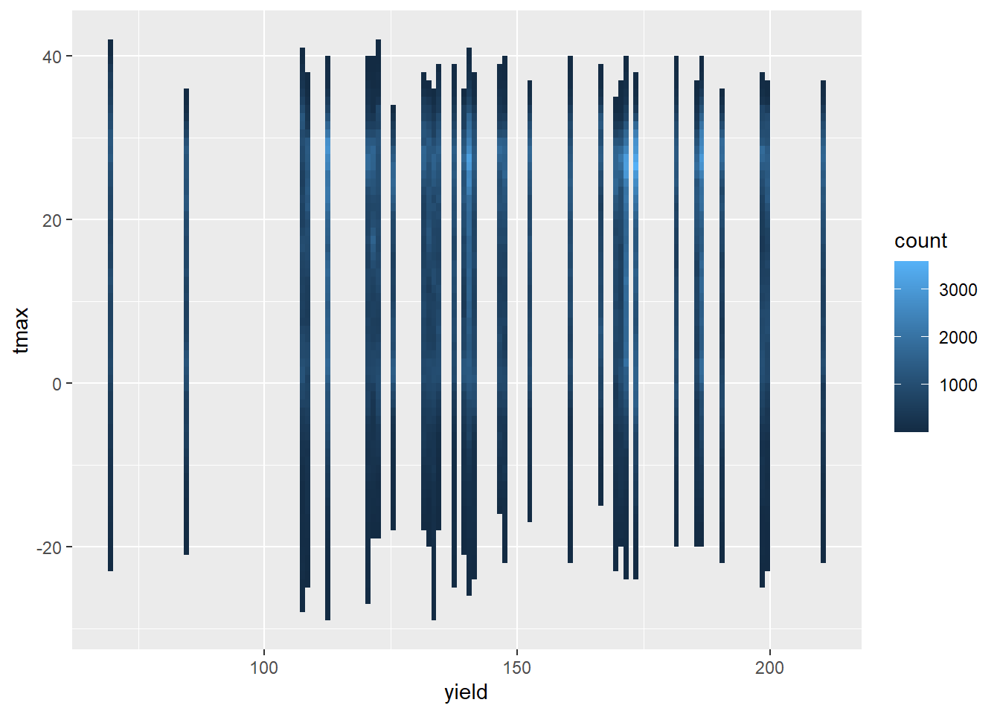
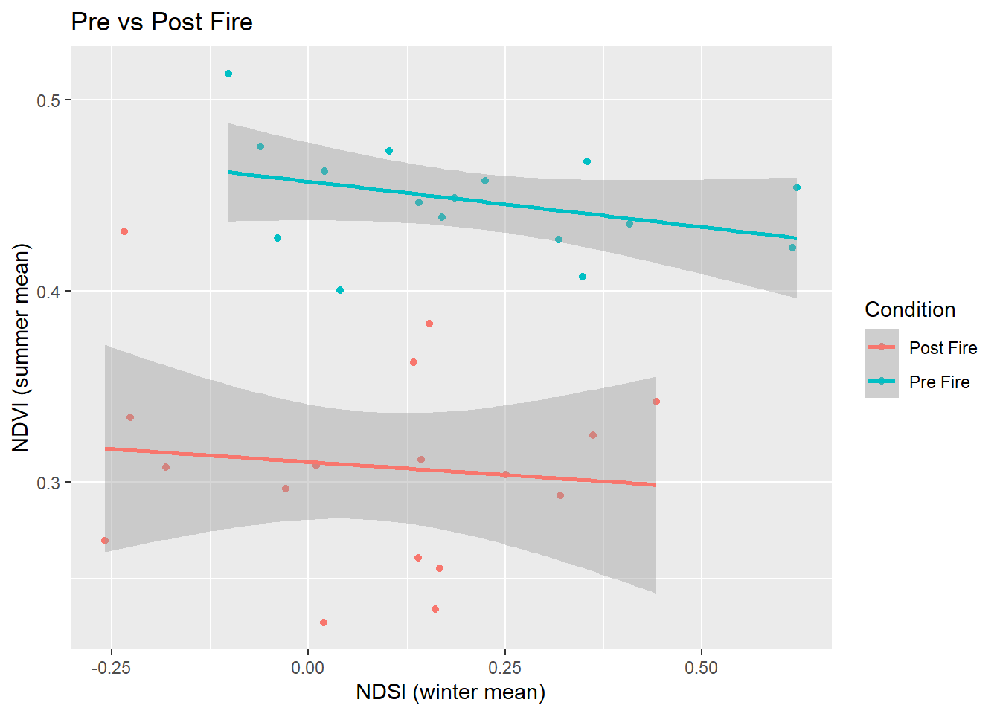

Chapter 2 Hayman Fire Recovery
In this assignment, we applied our R skills to perform a simple analysis on aggregated data from the Hayman fire. This focuses mostly on demonstrating competency with tidyverse data manipulation functions such as ‘group_by()’ and ‘summarize().’
2.1 Loading in data
setwd('C:/Users/gubbi/Dropbox/ESS580A7/bookdown')
####-----Reading in Data and Stacking it ----- ####
#Reading in files
files <- list.files('data',full.names=T)
#Read in individual data files
ndmi <- read_csv(files[1]) %>%
rename(burned=2,unburned=3) %>%
mutate(data='ndmi')
ndsi <- read_csv(files[2]) %>%
rename(burned=2,unburned=3) %>%
mutate(data='ndsi')
ndvi <- read_csv(files[3])%>%
rename(burned=2,unburned=3) %>%
mutate(data='ndvi')
# Stack as a tidy dataset
full_long <- rbind(ndvi,ndmi,ndsi) %>%
gather(key='site',value='value',-DateTime,-data) %>%
filter(!is.na(value))2.2 Assignment
2.2.1 Q1
What is the correlation between NDVI and NDMI? - here I want you to convert the full_long dataset in to a wide dataset using the function “spread” and then make a plot that shows the correlations a function of if the site was burned or not (x axis should be ndmi) You should exclude winter months and focus on summer months
jja_wide <- full_long %>%
pivot_wider(id_cols = c(DateTime, site),
names_from = data,
values_from = value) %>%
mutate(month = month(DateTime)) %>%
filter(month %in% c(6,7,8))
ggplot(jja_wide, aes(x = ndmi, y = ndvi, color = site))+
geom_jitter()+
geom_smooth(method = 'lm')+
labs(x = 'NDMI', y = 'NDVI', color = 'Condition',
title = 'Summertime Remotely Sensed Production')
NDMI is used to detect water in vegetation. NDVI detects the reflection of green light. Differences in plant cover respond to both measures uniquely. They are strongly correlated to each other as both are proxies of vegetative biomass.
2.2.2 Q2
- What is the correlation between average NDSI (normalized snow index) for January - April and average NDVI for June-August? In other words, does the previous year’s snow cover influence vegetation growth for the following summer?
seasonal <- full_long %>%
mutate(month = month(DateTime),
flag = NA)
seasonal$flag[seasonal$month %in% c(1,2,3)] <- 'Winter'
seasonal$flag[seasonal$month %in% c(6,7,8)] <- 'Summer'
seasonal_long <- seasonal %>%
filter(flag %in% c('Winter','Summer')) %>%
pivot_wider(id_cols = c(DateTime, site, flag),
names_from = data,
values_from = value) %>%
mutate(year = year(DateTime)) %>%
group_by(flag, year) %>%
summarize(ndsi_mean = mean(ndsi),
ndvi_mean = mean(ndvi)) %>%
pivot_wider(id_cols = year,
names_from = flag,
values_from = c(ndsi_mean, ndvi_mean))
ggplot(seasonal_long, aes(x = ndsi_mean_Winter, y = ndvi_mean_Summer))+
geom_point()+
labs(x = 'NDSI (seasonal mean)',
y = 'NDVI (seasonal mean)')
There is a positive correlation between increased winter snowpack and summertime vegetation growth.
2.2.3 Q3
How is the snow effect from question 2 different between pre- and post-burn and burned and unburned?
seasonal_long2 <- seasonal %>%
filter(flag %in% c('Winter','Summer')) %>%
pivot_wider(id_cols = c(DateTime, site, flag),
names_from = data,
values_from = value) %>%
mutate(year = year(DateTime)) %>%
group_by(flag, year, site) %>%
summarize(ndsi_mean = mean(ndsi),
ndvi_mean = mean(ndvi),
site = site) %>%
unique() %>%
pivot_wider(id_cols = c(year, site),
names_from = flag,
values_from = c(ndsi_mean, ndvi_mean)) %>%
select(site, year, ndsi_mean_Winter, ndvi_mean_Summer) %>%
na.omit() %>%
filter(year>2001)
ggplot(seasonal_long2, aes(x = ndsi_mean_Winter, y = ndvi_mean_Summer, color = site))+
geom_point()+
labs(x = 'NDSI (winter mean)',
y = 'NDVI (summer mean)',
title = 'Burned vs Unburned',
color = 'Condition')+
stat_smooth(method = 'lm')
seasonal_long3 <- seasonal %>%
filter(flag %in% c('Winter','Summer')) %>%
pivot_wider(id_cols = c(DateTime, site, flag),
names_from = data,
values_from = value) %>%
mutate(year = year(DateTime)) %>%
group_by(flag, year, site) %>%
summarize(ndsi_mean = mean(ndsi),
ndvi_mean = mean(ndvi)) %>%
unique() %>%
pivot_wider(id_cols = c(year, site),
names_from = flag,
values_from = c(ndsi_mean, ndvi_mean)) %>%
select(site, year, ndsi_mean_Winter, ndvi_mean_Summer) %>%
na.omit() %>%
select(-site) %>%
group_by(year) %>%
summarize(ndsi_mean_Winter = mean(ndsi_mean_Winter),
ndvi_mean_Summer = mean(ndvi_mean_Summer)) %>%
mutate(Timing = 'Pre Fire')
seasonal_long3$Timing[seasonal_long3$year>2001] <- 'Post Fire'
ggplot(seasonal_long3, aes(x = ndsi_mean_Winter, y = ndvi_mean_Summer, color = Timing))+
geom_point()+
labs(x = 'NDSI (winter mean)',
y = 'NDVI (summer mean)',
title = 'Pre vs Post Fire',
color = 'Condition')+
stat_smooth(method = 'lm')
2.2.4 Q4
What month is the greenest month on average?
seasonal %>%
select(-flag) %>%
pivot_wider(id_cols = c(DateTime, site, month),
names_from = data,
values_from = value) %>%
select(month, ndvi) %>%
na.omit() %>%
group_by(month) %>%
summarize('Mean NDVI' = mean(ndvi)) %>%
kbl()%>%
kable_styling()| month | Mean NDVI |
|---|---|
| 1 | 0.2186012 |
| 2 | 0.1986539 |
| 3 | 0.2019000 |
| 4 | 0.2501716 |
| 5 | 0.3036180 |
| 6 | 0.3512811 |
| 7 | 0.3633104 |
| 8 | 0.3871568 |
| 9 | 0.3827147 |
| 10 | 0.3570475 |
| 11 | 0.2852874 |
| 12 | 0.2513979 |
August is the greenest month on average.
2.2.5 Q5
What month is the snowiest on average?
seasonal %>%
select(-flag) %>%
pivot_wider(id_cols = c(DateTime, site, month),
names_from = data,
values_from = value) %>%
select(month, ndsi) %>%
na.omit() %>%
group_by(month) %>%
summarize('Mean NDSI' = mean(ndsi)) %>%
kbl()%>%
kable_styling()| month | Mean NDSI |
|---|---|
| 1 | 0.2099584 |
| 2 | 0.1988183 |
| 3 | -0.0420229 |
| 4 | -0.2278234 |
| 5 | -0.4105171 |
| 6 | -0.4409882 |
| 7 | -0.4504829 |
| 8 | -0.4594660 |
| 9 | -0.4539411 |
| 10 | -0.4085219 |
| 11 | -0.1151240 |
| 12 | 0.1241000 |
January is the snowiest month on average.